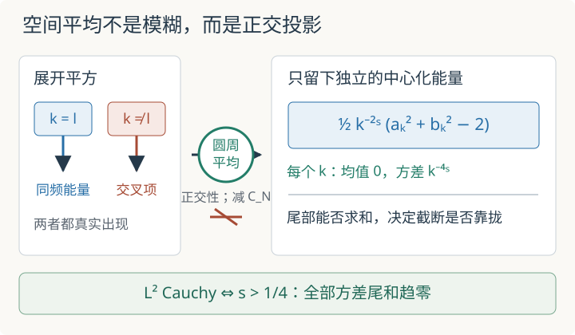

本页目录
基础衔接 09 · Wick 平方与截断极限：点值发散后还能留下什么
先修：测度论语言与期望、独立性与大数律、分布与弱导数，并会使用三角函数的正交关系。本讲在圆周上把一个 Gaussian Fourier 场算到底：点上的平方越来越狂躁，减去均值仍不能救回点值；但对常数测试函数的空间平均，在恰当正则性下却能成为 \(L^2\) Cauchy 序列。这是通往奇异 SPDE 与重整化的一座可验算小桥，不是完整随机分布收敛定理。
每个点都越来越不稳定，为什么整体平均反而可能稳定？
1. 先固定同一场，再逐步打开高频
把圆周写成 \(\mathbb T=[0,2\pi]\)，首尾视为同一点，并固定归一化平均
令 \(a_k,b_k\) 相互独立且都服从 \(N(0,1)\)。对 \(s\geq0\) 定义 Fourier 截断
\(k^{-s}\) 是第 \(k\) 个频率的振幅尺度：\(s\) 越大，高频衰减越快。所有 \(N\) 使用同一组随机系数；从 \(N\) 到 \(M\) 只是把 \(N+1,\ldots,M\) 模态接上去。这一点决定了 \(Y_M-Y_N\) 能否只剩尾部。若每次截断都重新抽一套系数，比较的是两个独立样本，不是同一随机对象的逼近。
对任意固定 \(x\)，\(X_N(x)\) 是中心 Gaussian，且
方差与 \(x\) 无关。特别地，\(s=1/2\) 时 \(C_N=H_N\) 是调和和，按 \(\log N\) 发散。因此 \(X_N(x)\) 不会在固定点上成为 \(L^2\) Cauchy 序列。
2. 减均值只完成了第一步
点上的 Wick 平方是
它满足 \(\mathbb EW_N(x)=0\)。但若 \(Z\sim N(0,C_N)\)，则 \(\mathbb EZ^4=3C_N^2\)，所以
在 \(s=1/2\) 时，这个方差是 \(2H_N^2\)，仍然发散。反项 \(C_N\) 去掉的是确定性均值，不会改变随机波动。于是“已经 Wick 排序”和“每一点都有极限”是两句不同的话。
真正值得试的是让粗糙对象作用在测试函数上。本讲只选最简单的常数测试函数 \(1\)，即定义
3. Fourier 正交性把双重和变成能量账本
展开 \(X_N^2\) 会出现许多 \(k,l\) 交叉项。归一化平均满足
因此不同频率互相消掉，同频率的正弦与余弦各留下 \(1/2\)：
又因为 \(C_N=\frac12\sum_{k=1}^Nk^{-2s}(1+1)\)，所以
这就是机制：空间平均不是把噪声“抹平”，而是利用 Fourier 正交性把交叉项精确投影掉，留下各频率相互独立的中心化能量。

4. 方差级数给出精确门槛
记 \(Q_k=a_k^2+b_k^2-2\)。因为 \(a_k,b_k\) 独立，且标准 Gaussian 平方的方差为 \(2\)，所以
不同 \(k\) 的 \(Q_k\) 也独立。于是
更重要的是，在同一耦合下，若 \(M\geq N\)，前 \(N\) 项逐项抵消：
从而
因此 \((Y_N)\) 在 \(L^2\) 中 Cauchy，当且仅当 \(p\) 级数 \(\sum k^{-4s}\) 收敛，也就是
这不是从有限图像猜出的阈值，而是由完整的跨截断二阶矩等式得到的。由于 \(L^2\) 是完备的，Cauchy 性保证存在同一概率空间上的极限 \(Y\in L^2\)。对 \(s>1/4\)，先令 \(M\to\infty\)（利用 \(L^2\) 范数的连续性），再作积分比较，得到误差界
所以均方根误差不超过
5. 临界反例与默认实验
临界值 \(s=1/4\) 不能靠“差一点”蒙混过去。令 \(M=2N\)，则
因此序列甚至不能让相邻倍增截断彼此靠近。若 \(s<1/4\)，同一块尾和还会随 \(N\) 按 \(N^{1-4s}\) 量级增长。
默认实验取 \(N=16,s=1/2,M=2N=32\)。这时点值与平均展示出完全不同的命运：
完整静态后备：先预测把 \(N\) 从 16 增到 32 时，点上 Wick 平方的方差和空间平均的跨截断差会一起变小吗？实验中的 \(N\) 范围为 2 到 128，\(s\) 范围为 0 到 1，比较截断固定为 \(M=2N\)。
| 默认账本 | 公式 | 数值 |
|---|---|---|
| 点方差尺度 | \(C_{16}=H_{16}\) | \(3.380729\) |
| 点上 Wick 平方方差 | \(2C_{16}^2\) | \(22.858657\) |
| 平均量方差 | \(\sum_{k=1}^{16}k^{-2}\) | \(1.584347\) |
| 两截断均方差 | \(\sum_{k=17}^{32}k^{-2}\) | \(0.029821\) |
| 两截断均方根差 | 上一行开方 | \(0.172687\) |
| 到极限的尾和上界 | \(16^{-1}\) | \(0.062500\) |
| 到极限的均方根上界 | \(16^{-1/2}\) | \(0.250000\) |
\(s=1/2\) 时，\(C_N\) 和点上方差继续发散，但 \(\operatorname{Var}Y_N\to\sum_{k\geq1}k^{-2}=\pi^2/6\)，而跨截断差趋零。若把滑块调到 \(s=1/4\)，尾积分上界不再适用；默认 \(N=16\) 时 \(\mathbb E|Y_{32}-Y_{16}|^2\approx0.677766\)，增加 \(N\) 也不会把倍增截断差压到零。
6. 这证明了什么，又没有证明什么
我们已经严格证明：当 \(s>1/4\) 时，标量随机变量
在 \(L^2\) 中收敛。这里的 \(1\) 是常数测试函数，归一化配对就是圆周平均。
我们没有证明 \(:X_N^2:\) 作为随机分布收敛。完整结论必须允许每个光滑测试函数 \(\varphi\)，研究
并给出随 \(\varphi\)、空间尺度和函数空间范数一致的估计。更没有证明某个非线性 SPDE 的解收敛；方程还需要时间正则性、非线性乘积、固定点或重构以及近似方案的稳定性。
这个模型补上了前沿课中的一块中间推理：点值方差发散并不排除测试函数配对收敛，而中心化本身也不保证这种收敛。决定结果的是空间相关结构经过测试函数投影后留下怎样的可求和尾部。
7. 两道迁移题
题一。 仍用同一耦合，但把比较截断改成 \(M=3N\)。证明 \(s=1/4\) 时 \(\mathbb E|Y_{3N}-Y_N|^2\to\log3\)。这个结论怎样排除 \(L^2\) Cauchy 性？若 \(s>1/4\)，\(M/N\) 的固定比例会改变阈值吗？
先判断尾和，再查看
\(s=1/4\) 时，跨截断方差为 \(\sum_{k=N+1}^{3N}1/k\)，由积分比较或调和数渐近式趋于 \(\log3\)，不趋于零。Cauchy 条件要求任意充分大的 \(M,N\) 都彼此接近，因此这一组反例已经足够。\(s>1/4\) 时，任何 \(M\geq N\) 的差都被无穷尾和 \(N^{1-4s}/(4s-1)\) 控制，所以固定比例不会改变阈值。
题二。 把反项从 \(C_N\) 改成 \(C_N+c\)，其中 \(c\) 与 \(N\) 无关。新的空间平均极限是什么？它是否改变 \(s>1/4\) 的 Cauchy 阈值？
分开检查确定性平移与随机尾部
新的平均量是
若 \(Y_N\to Y\)，新极限就是 \(Y-c\)。跨截断差仍为 \((Y_M-c)-(Y_N-c)=Y_M-Y_N\)，所以阈值不变。有限反项选择会平移极限，却不会修复一个不可求和的随机尾部。
速查与资料
| 层次 | 本讲的判据 | 结论 |
|---|---|---|
| 固定点 | \(C_N=\sum k^{-2s}\) | \(s=1/2\) 时点方差发散 |
| 点上 Wick 平方 | \(\operatorname{Var}(X_N^2-C_N)=2C_N^2\) | 减均值不等于点值收敛 |
| 常数测试函数 | \(\mathbb E\lvert Y_M-Y_N\rvert^2=\sum_{N<k\leq M}k^{-4s}\) | 当且仅当 \(s>1/4\) 时 \(L^2\) Cauchy |
| 随机分布或 SPDE | 还需所有测试函数和尺度的一致估计 | 本讲没有证明 |
更广的 Wick 幂与 Fourier 截断背景可参见 Hairer 的 Advanced Stochastic Analysis 讲义，其中以 Gaussian Fourier 场构造 \(\Phi^4_2\)；奇异方程中近似、反项与极限解的关系见 Hairer 的 Renormalisation of parabolic stochastic PDEs。本讲的有限和、阈值与误差界均已在正文独立推导，不把这个一维标量算例冒充一般定理。资料核查：2026-09-08。